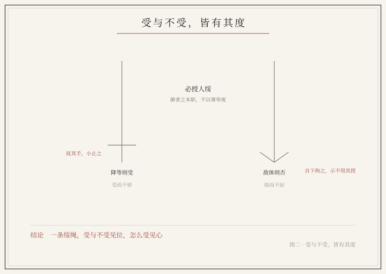

曲礼上 · 一·一百一十八 · 第 116 课
凡为人御者，必把绥递给乘车的人。仆者位卑则受，位敌则不受；位卑而授，则抚其手而后受；位敌而授，则自其手下取之。
说什么事：凡仆人之礼，必授人绥。若仆者降等，则受；不然则否。若仆者降等，则抚仆之手；不然，则自下拘之。
落在哪一层：仪，兼及礼意。讲的是「受与不受」的分寸。
为何编在此位：上节言为君御，此节言为凡人之御。由尊及卑，礼乃周遍。
【经】凡僕人之禮，必授人綏。若僕者降等，則受；不然則否。若僕者降等，則撫僕之手；不然，則自下拘之。
【注】撫，小止之，謙也。自下拘之，由僕手下取之也。僕與己同爵則不受。
仆人 疏「谓为一切仆，非但为君仆时也。车上既仆为主，故为人仆，必授绥与所升之人」。
降等 疏「谓士与大夫、大夫与卿御也。若御者卑降，则主人不须谦，故受取绥也」。
不然则否 疏「谓仆者敌体，虽御，其主人宜谦不受其绥也」。
抚仆之手 注「小止之，谦也」。疏「仆者虽卑，而受其绥不谦，犹当抚止仆手，若不听自授，然后乃受」。
自下拘之 注「由仆手下取之也」。疏「主人不就仆手外取之，而以手从仆手下进，拘取仆手里上边，示不用仆授也」。
同爵则不受 注「仆与己同爵则不受」。疏「谓不降等者」。
凡为人驾车的礼，必须把绥递给要上车的人。若御者位卑于主人，主人就受；若位敌，就不受。位卑者授绥时，主人先轻按其手再受；位敌者授绥时，主人要从他手下自取。
一节四句，讲一条绳子的受与不受。受不受看位，怎么受看心：位卑则受而抚其手，位敌则不受而自取。敬与不骄，同时办到。
第一层 必授人绥 无论尊卑，御者都要递绥。授是本分，不因对方位低而废。
第二层 降等则受 御者既卑，受之不为倨。礼之受与不受，先看位，不看情。
第三层 抚手而后受 注「小止之，谦也」。手上按一按，是不让仆人觉得「我递你就接」。一个动作，护住了对方的体面。
第四层 自下拘之 位敌则不受其授，而从其手下自取。疏说得极细：「示不用仆授也。」取而不受，是既不倨、也不屈。
与今日何干 别人替你做事，接与不接、怎么接，都是分寸。接得太顺，伤其尊；推得太硬，伤其情。
| 左 | 右 |
|---|---|
| 必授人绥 | 御者之本职，不以尊卑废 |
| 仆者降等则受 | 位卑者授，受之不为倨 |
| 不然则否 | 位敌者授，不受以示谦 |
| 降等则抚仆之手 | 轻按而后受，护其体面 |
| 不然则自下拘之 | 从其手下自取，示不用其授 |
画两条并列的细索，自上方垂下：左侧一索的下端被一只手轻轻按着，手与索之间留一线空隙；右侧一索的下端，另一只手从索的内侧下方探入、把索卷在掌中。两索之间以一道浅竖线分开示意两种情形。不画人面、不写文字。赭色只用在左侧那只轻按的手。
